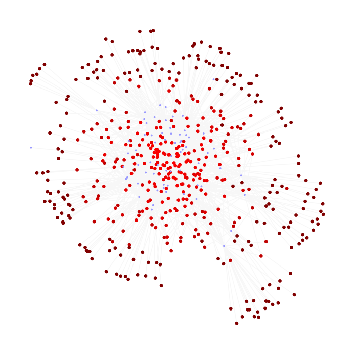

Hello!
This website is a work in progress.
Who?
I'm a computer science major going into my freshman year at Kansas University.
What?
This is my website, where I'm going to put all of my random stuff!
Why?
You see, I keep making random things then doing nothing with them.
Examples?
Yes!

This is a bipartite graph of AP Literature Open Prompts! For the third question in AP Lit, a list of books is given that fits some theme. The books are shown in red, and are connected to the question, shown in blue, where they were listed. Data from Ms. Effie.